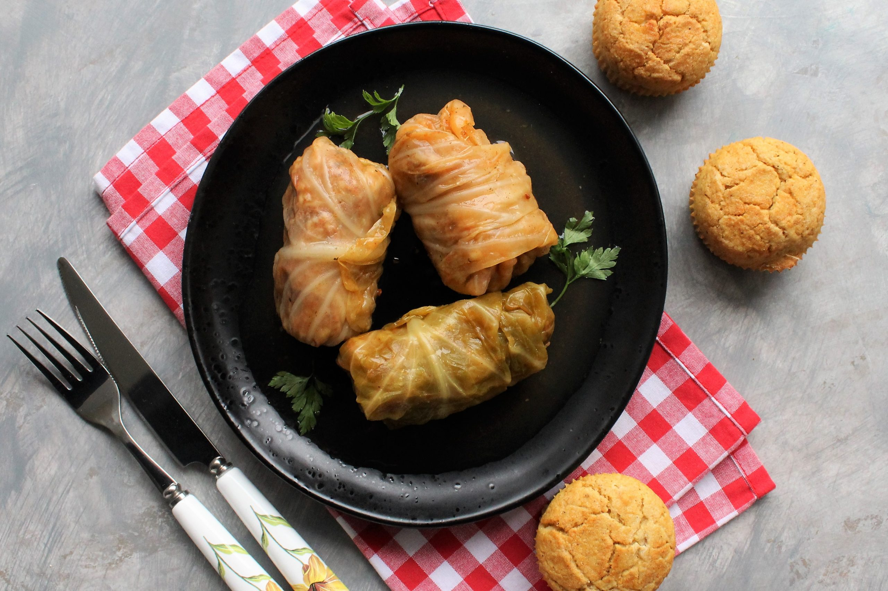

Sarma

Sarma, the Serbian delicacy!
This recipe for Serbian stuffed cabbage, or sarma
Ingredients:
- 1 (3-to 4-pound) head cabbage
- 1kg of ground meat
- bacon
- onions
- smoked ribs
- tomato sauce
- black pepper
- rice
Recipee instruction:
- Steam the head of cabbage until the outer leaves are limp, then cool it and separate the leaves
- In a bowl mix togather rice, meat and seasoning
- Fill cabbage leaves with the mix previously prepared and roll it
- add tomato sauce, ribs and bacon into the bowl and cook
Back